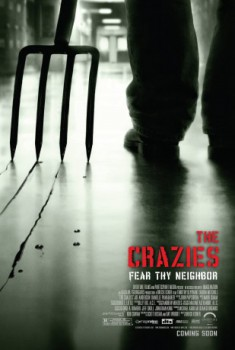

The Crazies (2010)


Fear Thy Neighbor

País:Estados Unidos, 101 minutos.
Idiomas:Inglés
GénerosMisterio, Terror, Acción
Director/es:Breck Eisner
Guionistas:Scott Kosar, Ray Wright
Códec de vídeo:Unknown
Número: 3874
TomatoMeter:

--

--
Clasificación IMDb:


6.5/10 (2.1K votos)
Certificación:18
Argumento:
Four friends find themselves trapped in their small hometown after they discover their friends and neighbors going quickly and horrifically insane.
Reparto
Timothy Olyphant (Como David), Radha Mitchell (Como Judy), Joe Anderson (Como Russell), Danielle Panabaker (Como Becca), Joe Reegan (Como Pvt. Billy Babcock)
Medio: Archivo de video,
Localización: D:\PELICULAS\TERROR\The Crazies\The Crazies [2010].mp4
Prestado: No
Rel. aspecto: Unknown